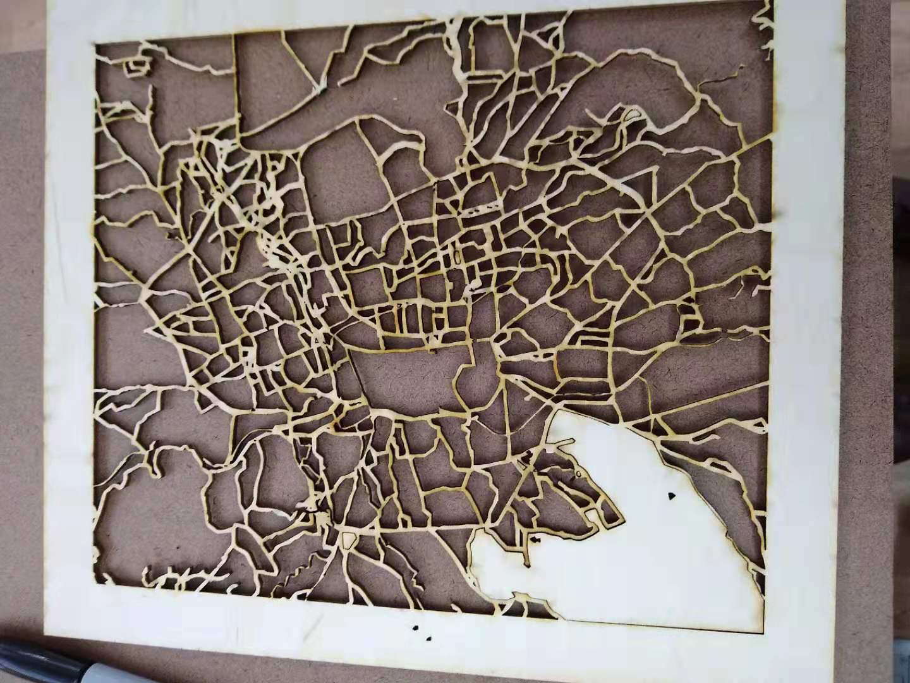

For this assignment, we had to make something on the laser cutter. This was a double-project for me, because I knew nothing about either laser cutters or Adobe Illustrator, which is what laser cutter projects (at least at ITP) run on.
At first, I was considering trying to draw something on Adobe Illustrator, but my friend who's a designer said that was a terrible idea and that I would just be better off importing designs that I wanted to cut. I briefly considered making a pattern that was a skull on one side and a face on the other, inspired by this video, but then I got the idea for one of those laser-cut maps you see all over the. I'd always thought those were cool, and then I'd have something to hang up in my apartment for once.
It turns out that not only are there guides for this, but that epilog lasers (which is the brand our laser cutter is) actually has its own guide to cutting engraving and vector cutting maps. It took me about an hour to figure out image trace, expand, and all the other stuff I had to do to get a printable map, but I finally had one. I chose Kathmandu, which is the first city I really lived in when I started traveling. I ended up with two files in Adobe Illustrator, one for cutting and one for engraving.

Honestly, that was the easy part. Next I had to find the right materials and settings that would make the map actually look good when engraved. I found some thin pieces of nice-looking wood in the scrap pile, but first I wanted to prototype the design on cardboard.
I took a piece of cardboard and set our 60 watt epilog mini laser cutter to vector cut. There were no recommended settings for cardboard, so I used the settings for wood. Cutting took maybe 5 to 7 minutes. Surprisingly, it worked pretty well the first time around. There were a few places where some of the very thin lines had just been burnt out (most noticeably in the top right corner), but otherwise it seemed like a success.
Next, I wanted to try etching, also on the cardboard. The shop staff said "I don't even know if you can etch cardboard, I've never tried it before". Turns out you can, and the little corrugated rises actually looked pretty good on this. I used the standard recommended settings for wood (300 dps) as I did for cutting.
I thought these looked pretty good, but that the lines were so small it was cutting through some of them. Originally I'd set the maps to be around 5 x 7 inches, but for the wood cut I decided to scale it up to about 9 x 11 inches. I figured that might help preserve some of the lining, especially when it came to cutting.
I used a very thin piece of plywood and started with the recommended settings for vector cutting. At first, it seemed to be going fine, but when I tried the tape test to lift the pieces of wood out they had obviously not all been cut through (this was on a Sunday, so the mirrors were probably gunky). I ran the laser cutter twice more, each time ramping up the power, until eventually most of the pieces had been cut out. In the end, there was one big one I had to try and cut out manually. Overall, increasing the size definitely made the lines thicker, and there was less lost material this time.
Finally, I wanted to etch into the wood, just to see how it'd look. I used recommended wood setting at 300 dpi, and it turned out looking good. The biggest thing to note is that etching this took ~30 minutes, which is a non-trivial amount of time -- but the result is sweet.
Finally, here's the whole family together.
Some key takeaways: if you have lots of tiny lines, making the drawing bigger definitely works better. Also, when cutting with wood, there's a chance it'll blacken the wood a little bit, which isn't very pretty. Third, the settings can be wonky, but nothing much to do about that except try different settings or run it again.
Comments? Questions? Concerns? Email me here!